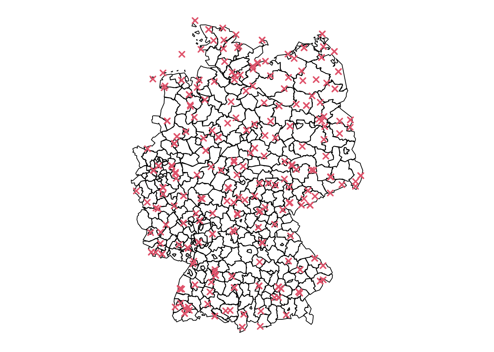
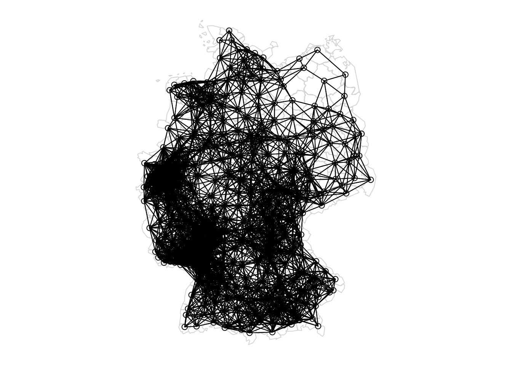
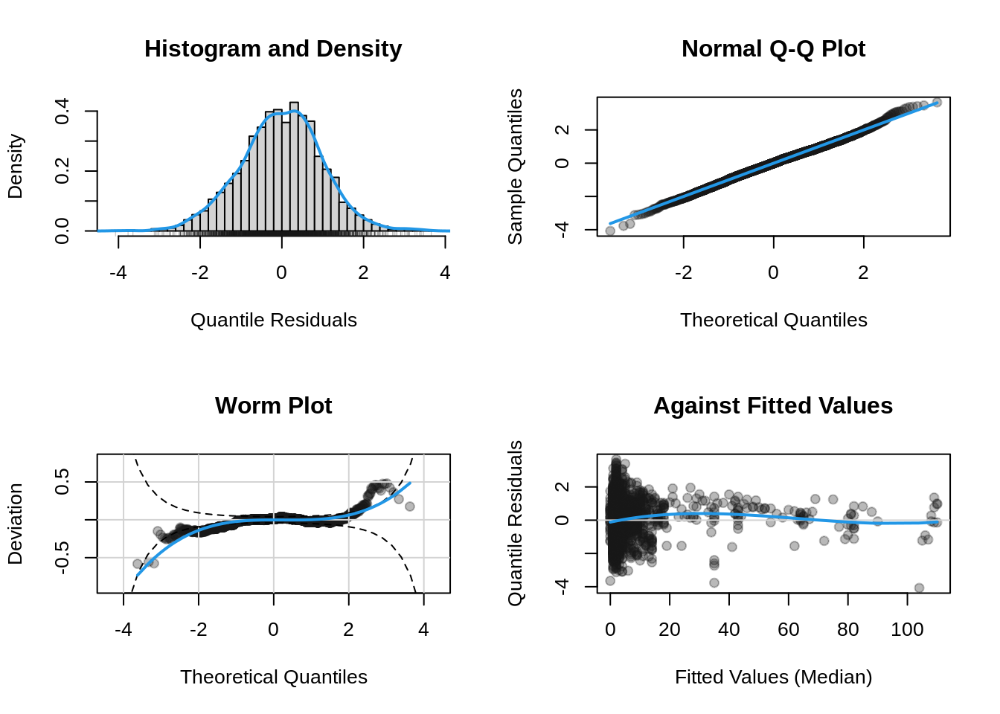
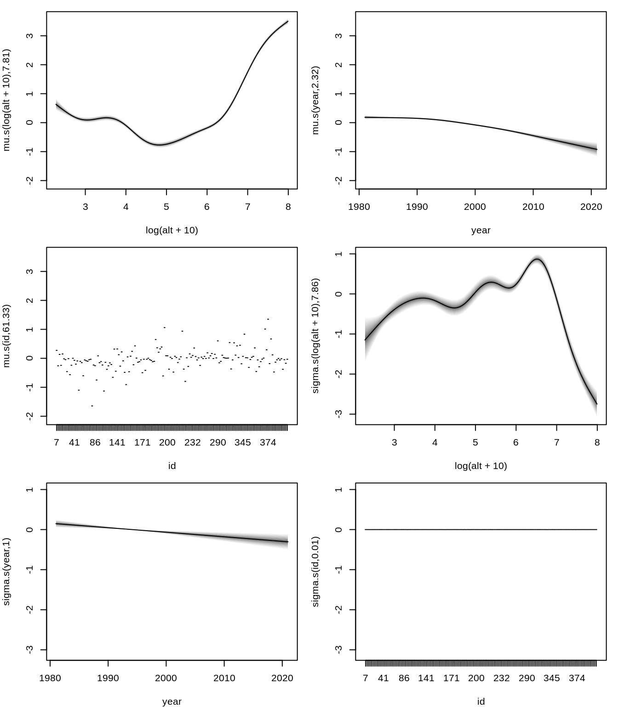
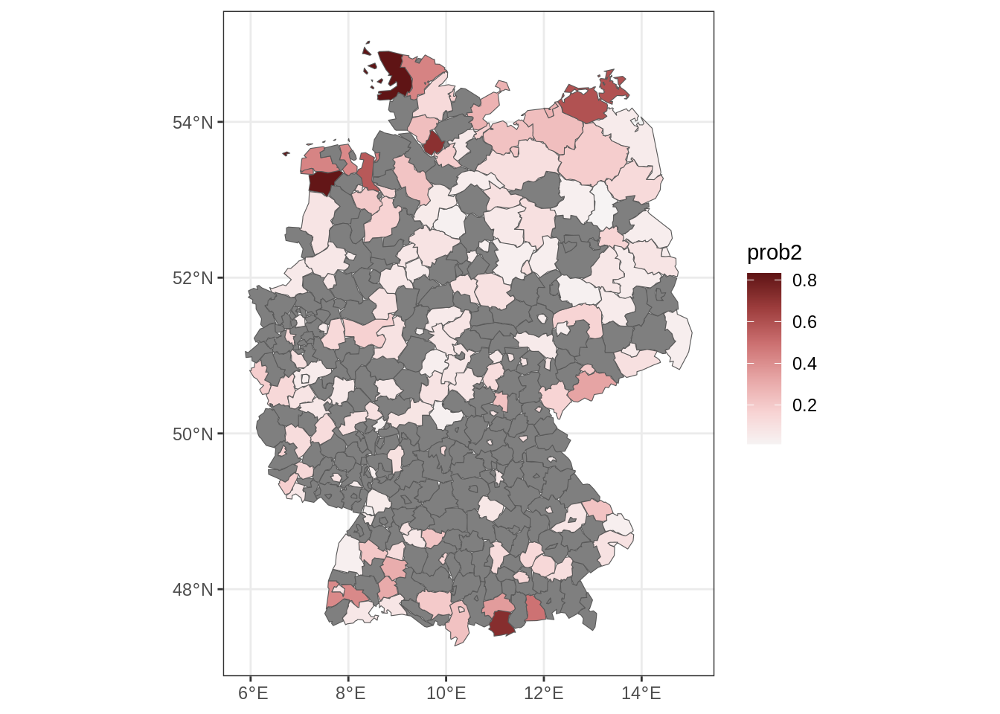

pkg <- c("spdep", "ggplot2", "raster", "exactextractr")
for(p in pkg) {
if(!(p %in% installed.packages())) install.packages(p)
}
library("gamlss2")
library("sf")
library("spdep")
library("ggplot2")
library("raster")
library("colorspace")Spatial Effects
Spatial data analysis is important in many fields such as environmental science, epidemiology, and climatology, where observations are collected across different geographical locations. A key challenge in spatial modeling is accounting for the dependence structure among nearby regions, which often display correlated patterns in outcomes.
In generalized additive models for location, scale, and shape (GAMLSS), spatial effects can be incorporated in various ways, such as through Markov random fields (MRFs). MRFs handle spatial correlation by applying penalties that reflect the neighborhood structure of the spatial data. This vignette is divided into two parts: the first part demonstrates how to estimate discrete spatial effects using MRFs with the gamlss2 package, while the second part provides examples of modeling spatial effects with smooth functions like thin-plate splines or tensor product splines.
1 Example: Modeling Severe Storm Counts in Germany
In this example, we analyze severe storm counts recorded at various weather stations across Germany over multiple years. Our goal is to model these storm counts while accounting for the spatial dependence between stations. To achieve this, we associate each weather station with its respective county in Germany, enabling us to incorporate the geographical structure into the model.
## load the Germany severe storm data
data("storms", package = "gamlss2")
## plot storm counts per station and year
par(mar = c(4, 4, 1, 1))
plot(range(storms$year), range(storms$counts), type = "n",
xlab = "Year", ylab = "Counts")
for(j in levels(storms$id)) {
dj <- subset(storms, id == j)
dj <- dj[order(dj$year), ]
with(dj, lines(counts ~ year, type = "b", pch = 16,
col = rgb(0.1, 0.1, 0.1, alpha = 0.4)))
}
The data contains storm counts per year for each station. A preliminary visualization of these counts allows us to inspect patterns of storm frequency over time and across stations.
2 Visualizing the Spatial Structure
We begin by plotting the locations of weather stations on a map of Germany. The sf package is used to manage and plot spatial data.
## load map of Germany
## needs sf package for plotting
library("sf")
data("Germany", package = "gamlss2")
## plot station locations
par(mar = rep(0.5, 4))
plot(st_geometry(Germany))
co <- unique(storms[, c("lat", "lon")])
points(co, col = 2, pch = 4, lwd = 2)
This map shows the geographical distribution of weather stations. The spatial structure will be incorporated into our model to account for the proximity of stations when estimating storm counts.
3 Defining the Neighborhood Structure
Next, we define the neighborhood structure among the weather stations using a distance-based criterion. This is crucial for the Markov random field, as it specifies how spatial correlation should be penalized.
## estimate spatial count model using
## a Markov random field, first a neighbor matrix
## needs to be computed, here we use distance based
## neighbors
library("spdep")
nb <- dnearneigh(st_centroid(st_geometry(Germany)), d1 = 0, d2 = 80)
par(mar = rep(0.5, 4))
plot(st_geometry(Germany), border = "lightgray")
plot.nb(nb, st_geometry(Germany), add = TRUE)Warning in st_point_on_surface.sfc(coords): st_point_on_surface may not give
correct results for longitude/latitude data
The neighbor matrix is constructed using the dneirneigh() function from the spdep package, which calculates the adjacency structure of the geographical regions. We then visualize the spatial network of neighbors on the map.
4 Constructing the Penalty Matrix
The penalty matrix defines the spatial penalties imposed by the Markov random field. The matrix is constructed based on the neighbor relationships defined earlier.
## compute final neighbor penalty matrix
K <- nb2mat(nb, style = "B", zero.policy = TRUE)
## assign region names
rownames(K) <- colnames(K) <- levels(Germany$id)
## set up final penalty matrix
K <- -1 * K
diag(K) <- -1 * rowSums(K)
## remove regions not in data
i <- which(rownames(K) %in% levels(storms$id))
K <- K[i, i]The penalty matrix K is set up such that it reflects the neighborhood relationships between the regions. Each element of the matrix represents how strongly each region is connected to its neighbors. The diagonal entries represent the total number of neighbors for each region.
5 Estimating the Model
We now estimate the spatial count model using the Negative Binomial distribution (NBI). The model includes smooth functions of altitude, year, and an interaction between altitude and year, as well as a (functional) random effect over regions for the time trend. Spatial effects are incorporated using the bs = "mrf" option.
## estimate count model using the NBI family,
## model formula is
f <- ~ s(log(alt + 10)) + s(year) + s(id, bs = "mrf", xt = list("penalty" = K), k = 100)
f <- list(update(f, counts ~ .), f)
## estimate model using BIC for shrinkage parameter selection
b <- gamlss2(f, data = storms, family = NBI, criterion = "BIC")Note that estimation of this model takes some time, because of the quite high number of coefficients for the (functional) random effect ti(id, year, bs = c("re", "cr"), k = c(157, 5)).
## model summary
summary(b)Call:
gamlss2(formula = counts ~ s(log(alt + 10)) + s(year) + s(id,
bs = "mrf", xt = list(penalty = K), k = 100) | s(log(alt +
10)) + s(year) + s(id, bs = "mrf", xt = list(penalty = K),
k = 100), data = storms, family = NBI, ... = pairlist(x = FALSE, criterion = "BIC"))
---
Family: NBI
Link function: mu = log, sigma = log
*--------
Parameter: mu
---
Coefficients:
Estimate Std. Error t value Pr(>|t|)
(Intercept) 1.2999 0.0167 77.86 <2e-16 ***
---
Smooth terms:
s(log(alt + 10)) s(year) s(id)
edf 7.5077 2.2994 52.88
*--------
Parameter: sigma
---
Coefficients:
Estimate Std. Error t value Pr(>|t|)
(Intercept) -0.20330 0.02505 -8.117 6.6e-16 ***
---
Signif. codes: 0 '***' 0.001 '**' 0.01 '*' 0.05 '.' 0.1 ' ' 1
---
Smooth terms:
s(log(alt + 10)) s(year) s(id)
edf 7.4533 2.1207 24.712
*--------
n = 3494 df = 98.97 res.df = 3395.03
Deviance = 16484.181 Null Dev. Red. = 14.46%
AIC = 16682.1271 elapsed = 4.46secModel calibration is checked using histogram, Q-Q plot, wormplot etc.
plot(b, which = "resid")
Here, the spatial effect is modeled as an MRF smooth (s(id, bs = "mrf")), where the penalty matrix K enforces spatial structure based on neighboring stations. We use the Bayesian Information Criterion (BIC) to select the optimal smoothing parameters.
6 Visualizing the Estimated Effects
Finally, we visualize the estimated effects from the fitted model.
par(mar = c(4, 4, 1, 1))
plot(b)
The plot shows the estimated smooth functions for altitude, year, and the spatial effect. These visualizations help us interpret how storm counts vary across space and time.
7 Prediction
We predict the spatial risk of more than 2 severe storms in 2022. Therefore, we set up a new data frame containing only the unique locations.
nd <- unique(storms[, "id", drop = FALSE])
## add the year
nd$year <- 2025
## add altitude information, this is stored
## in a raster file in
rf <- file.path(system.file(package = "gamlss2"), "extra", "GermanyElevation.grd")
## needs the raster package
library("raster")
## read altitude raster file
alt <- raster(rf)
## aggregate altitude to regions
library("exactextractr")
Germany$alt <- exact_extract(alt, Germany, fun = "median")
nd <- merge(nd, Germany[, c("id", "alt")], by = "id")
## predict parameters of the NBI distribution
par <- predict(b, newdata = nd)
## estimated probability of more than 2 severe storms
nd$prob2 <- 1 - family(b)$p(2, par)
## add fitted probabilities to map of Germany
m <- merge(Germany, nd[, c("id", "prob2")], by = "id", all.x = TRUE)
## plot spatial risk
library("ggplot2")
library("colorspace")
ggplot(m) + geom_sf(aes(fill = prob2)) +
scale_fill_continuous_diverging("Blue-Red 3") + theme_bw()
## note that because of the discrete spatial effect,
## there are a lot of NAs, therefore, we need to compute
## predictions in such regions by averaging using the neighbors
## of a region. we use the neighbour list object nb to compute
## the predictions, this is iterated.
fill_missing_mrf <- function(m, nb, j = "fmu") {
## while there are still NAs in the specified column (e.g., 'fmu')
while(any(is.na(m[[j]]))) {
## recalculate the number of non-NA neighbors for each region
na_counts <- sapply(seq_along(nb), function(i) {
if(is.na(m[[j]][i])) {
sum(!is.na(m[[j]][nb[[i]]])) ## count non-NA neighbors
} else {
-1 ## region already filled, deprioritize
}
})
## find the region with the most non-NA neighbors
max_index <- which.max(na_counts)
## update that region using the mean of its neighbors' values
if(length(nb[[max_index]]) > 0) {
m[[j]][max_index] <- mean(m[[j]][nb[[max_index]]], na.rm = TRUE)
}
}
## return the updated predictions
return(m)
}
m <- fill_missing_mrf(m, nb, j = "prob2")
## plot final spatial risk
ggplot(m) + geom_sf(aes(fill = prob2)) +
scale_fill_continuous_diverging("Blue-Red 3") + theme_bw()References
Rigby, R. A., and D. M. Stasinopoulos. 2005. “Generalized Additive Models for Location, Scale and Shape.†Journal of the Royal Statistical Society C 54 (3): 507–54. https://doi.org/10.1111/j.1467-9876.2005.00510.x.